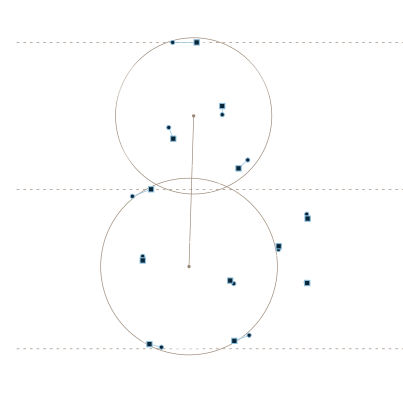

Für Versicherungsunternehmen
Wir kennen das Geschäftsmodell Versicherung von innen – von der Strategie über Kennzahlen und Gremien bis in den Vertrieb. Deshalb brauchen wir keine Einarbeitung und liefern ab dem ersten Termin.
Unsere Einsatzgebiete
Wir werden eingebunden, wenn Zusammenhänge unklar sind, die Komplexität zu groß ist und somit ein Thema nicht voran kommt. Umsetzung ist unser Handwerk.
Wenn die Richtung klar sein muss – und im Alltag ankommen soll.
Wenn Zahlen da sind, aber nicht steuern.
Wenn Themen seit Monaten „in Bearbeitung“ sind.
Wenn Potenziale im Markt liegen bleiben.
Wenn KI das Geschäftsmodell verändern soll, nicht nur Prozesse.
Wenn Unsicherheit zur dauerhaften Managementaufgabe wird.
Wir müssen nicht abgeholt werden
Wir kennen das Geschäftsmodell
Versicherung von innen.
Wer muss eingebunden werden? Wie laufen Entscheidungen durch Vorstand und Aufsichtsrat? Welche Kennzahl zeigt, ob es wirkt? Das wissen wir – aus eigener Praxis. Deshalb steigen wir ohne Einarbeitungszeit ein.
Einsatzgebiete im Detail
Wenn die Richtung klar sein muss – und im Alltag ankommen soll.
Eine Strategie ist erst dann etwas wert, wenn sie im Unternehmen wirkt. Wir schärfen Zielbild und Geschäftsmodell und übersetzen beides in konkrete Maßnahmen, Zuständigkeiten und Meilensteine.
Was wir konkret tun
Ihr ErgebnisEine Strategie, die im Unternehmen verstanden und umgesetzt wird.
Wenn Zahlen da sind, aber nicht steuern.
Wir kennen die Kennzahlenlogik des Versicherungsgeschäfts – von der Rechnungslegung bis zur Vertriebssteuerung – und verbinden sie mit den Zielen, die tatsächlich erreicht werden sollen.
Was wir konkret tun
Ihr ErgebnisSie sehen, ob die Umsetzung wirkt – und können gegensteuern.
Einsatzgebiete im Detail
Wenn Themen seit Monaten „in Bearbeitung“ sind.
Wir wissen, wie Entscheidungswege in Versicherungsunternehmen laufen und wer eingebunden werden muss. Wir bereiten Entscheidungen so vor, dass Vorstand und Aufsichtsrat entscheiden können.
Was wir konkret tun
Ihr ErgebnisEine Entscheidung – und ein Plan, wie sie umgesetzt wird.
Wenn Potenziale im Markt liegen bleiben.
Wachstum entsteht selten allein durch mehr Vertrieb. Wir schärfen Leistungsversprechen, Zielgruppen und Vertriebslogik – und setzen die Maßnahmen mit Ihren Teams um.
Was wir konkret tun
Ihr ErgebnisMessbar mehr Wirkung im Markt.
Einsatzgebiete im Detail
Wenn KI das Geschäftsmodell verändern soll, nicht nur Prozesse.
Wir klären, welche Rolle KI im eigenen Geschäftsmodell spielen soll, und bringen die Prioritäten in die Fachbereiche – vom Zielbild bis zu den ersten umgesetzten Vorhaben.
Was wir konkret tun
Ihr ErgebnisEine KI-Strategie, die im Unternehmen konkret wird.
Wenn Unsicherheit zur dauerhaften Managementaufgabe wird.
Resilienz beschreibt die Fähigkeit, unter veränderten Bedingungen handlungsfähig zu bleiben. Wir verbinden Geschäftsmodellverständnis mit Risiko- und Governance-Perspektive.
Was wir konkret tun
Ihr ErgebnisKlare Verantwortlichkeiten und robustere Strukturen.
Ihr Ergebnis
Wir kennen das Geschäftsmodell Versicherung über alle Ebenen hinweg – und steigen deshalb ohne Einarbeitungszeit ein.
Struktur · Klarheit · Umsetzung
Vom komplexen Thema zum umgesetzten Ergebnis.
Wir unterstützen Führungskräfte, komplexe Themen zu strukturieren und entscheidbar zu machen.
Durch Fokus auf die Interessen der beteiligten Stakeholder erzeugen wir Klarheit und Entscheidbarkeit.
Um das gewünschte Ergebnis sicherzustellen, stehen wir für die anschließende Umsetzung bereit.
Vorgehen
Wir steigen ohne Anlaufzeit ein, weil wir das Geschäftsmodell kennen.
Wir bereiten Entscheidungen so vor, dass Vorstand und Gremien entscheiden können.
Wir setzen gemeinsam mit Ihren Teams um – operativ, nicht nur begleitend.
Wir machen die Wirkung an Kennzahlen fest und halten nach.
Über uns
Wir kennen das Geschäftsmodell Versicherung von innen und haben schon viele Projekte gemeinsam umgesetzt. Jeder von uns bringt klare Schwerpunkte mit – im Projekt arbeiten wir beide selbst mit.
Partner
Tobias Müller
Governance, Gremien & Risiko
Tobias Müller kommt aus der Rückversicherung: Nach Stationen bei SCOR und als Underwriter bei Hannover Re führte er über zwölf Jahre die Müller Unternehmensberatung für Versicherer und Rückversicherer. Heute ist er Mitglied der Aufsichtsräte von Gartenbau-Versicherung und Grundeigentümer-Versicherung.
Mitglied in zwei Aufsichtsräten
Partner
Daniel Ströbel
Strategie, Führung & Vertrieb
Daniel Ströbel verantwortete bei der SV SparkassenVersicherung Konzernstrategie und Risikomanagement, baute das Inhouse-Consulting Leben auf und leitete eine Abteilung mit rund 40 Mitarbeitenden. Seit 2012 führt er die empiria GmbH – mit über 300 Projekten für die Versicherungsbranche.
Über 300 Projekte für die Versicherungsbranche
Was uns verbindet
Wir verstehen, wie die Teile zusammenhängen: wie Strategie in Kennzahlen sichtbar wird, wie Gremien entscheiden und was davon im Vertrieb ankommt. Genau dort treffen sich unsere beiden Schwerpunkte.
Wir sind eingespielt. Sie bekommen zwei Partner, die sich ergänzen – nicht zwei Einzelkämpfer.
Governance, Risiko und Gremien auf der einen, Strategie, Führung und Vertrieb auf der anderen Seite.
Wir machen nur, woran wir glauben und was uns Spaß macht. Das merken Sie am Ergebnis.
Ihr Kontakt
Erzählen Sie uns, was ansteht. Wir sagen Ihnen offen, ob und wie wir es gemeinsam mit Ihnen umsetzen.
Tobias Müller
Governance, Gremien & Risiko
tobias@muellerundstroebel.de
+49 176 2152 9798
Daniel Ströbel
Strategie, Führung & Vertrieb
daniel@muellerundstroebel.de
+49 176 3134 7217
Wir bleiben, bis das Ergebnis steht.
Wir müssen nicht abgeholt werden.
Wir machen nur, woran wir glauben.
www.muellerundstroebel.de
Impressum
empiria GmbH
Kapellengasse 6
74564 Crailsheim
Register
Handelsregister: HRB 750146
Registergericht: Amtsgericht Ulm
Vertreten durch: Daniel Ströbel
Kontakt
daniel@muellerundstroebel.de
USt-IdNr.: DE 281217286
www.muellerundstroebel.de